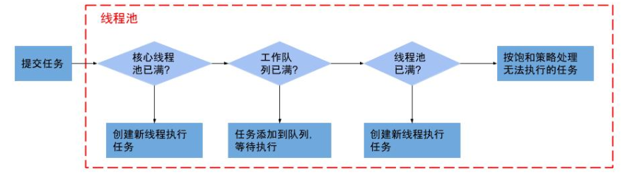

在平时的时候，我们使用线程的时候就去创建一个线程，但并发的线程数量很多，并且每个线程都是执行一个时间很短的任务就结束了，这样频繁创建线程就会大大降低系统的效率，因为频繁创建线程和销毁线程需要时间。所以我们会使用线程池。线程池的优势很明显，如下：
- 降低系统资源消耗，通过重用已存在的线程，降低线程创建和销毁造成的消耗；
- 提高系统响应速度，当有任务到达时，无需等待新线程的创建便能立即执行；
- 方便线程并发数的管控，线程若是无限制的创建，不仅会额外消耗大量系统资源，更是占用过多资源而阻塞系统或
oom等状况，从而降低系统的稳定性。线程池能有效管控线程，统一分配、调优，提供资源使用率； - 更强大的功能，线程池提供了定时、定期以及可控线程数等功能的线程池，使用方便简单；
Java中的ThreadPoolExecutor类
java.uitl.concurrent.ThreadPoolExecutor类是线程池中最核心的一个类，在ThreadPoolExecutor类中提供了四个构造方法。
1 | public class ThreadPoolExecutor extends AbstractExecutorService { |
创建线程池，在构造一个新的线程池时，必须满足下面的条件：
corePoolSize（线程池基本大小）必须大于或等于0；maximumPoolSize（线程池最大大小）必须大于或等于1；maximumPoolSize必须大于或等于corePoolSize；keepAliveTime（线程存活保持时间）必须大于或等于0；workQueue（任务队列）不能为空；threadFactory（线程工厂）不能为空，默认为DefaultThreadFactory类handler（线程饱和策略）不能为空，默认策略为ThreadPoolExecutor.AbortPolicy。
对应的参数解释：
corePoolSize（线程池基本大小）：当向线程池提交一个任务时，若线程池已创建的线程数小于corePoolSize，即便此时存在空闲线程，也会通过创建一个新线程来执行该任务，直到已创建的线程数大于或等于corePoolSize时，才会根据是否存在空闲线程，来决定是否需要创建新的线程。除了利用提交新任务来创建和启动线程（按需构造），也可以通过prestartCoreThread()或prestartAllCoreThreads()方法来提前启动线程池中的基本线程。maximumPoolSize（线程池最大大小）：线程池所允许的最大线程个数。当队列满了，且已创建的线程数小于maximumPoolSize，则线程池会创建新的线程来执行任务。另外，对于无界队列，可忽略该参数。keepAliveTime（线程存活保持时间）：默认情况下，当线程池的线程个数多于corePoolSize时，线程的空闲时间超过keepAliveTime则会终止。但只要keepAliveTime大于0，allowCoreThreadTimeOut(boolean)方法也可将此超时策略应用于核心线程。另外，也可以使用setKeepAliveTime()动态地更改参数。unit（存活时间的单位）：时间单位，分为7类，从细到粗顺序：NANOSECONDS（纳秒），MICROSECONDS（微妙），MILLISECONDS（毫秒），SECONDS（秒），MINUTES（分），HOURS（小时），DAYS（天）；workQueue（任务队列）：用于传输和保存等待执行任务的阻塞队列。可以使用此队列与线程池进行交互：如果运行的线程数少于
corePoolSize，则Executor始终首选添加新的线程，而不进行排队。如果运行的线程数等于或多于
corePoolSize，则Executor始终首选将请求加入队列，而不添加新的线程。如果无法将请求加入队列，则创建新的线程，除非创建此线程超出
maximumPoolSize，在这种情况下，任务将被拒绝。threadFactory（线程工厂）：用于创建新线程。由同一个threadFactory创建的线程，属于同一个ThreadGroup，创建的线程优先级都为Thread.NORM_PRIORITY，以及是非守护进程状态。threadFactory创建的线程也是采用new Thread()方式，threadFactory创建的线程名都具有统一的风格：pool-m-thread-n（m为线程池的编号，n为线程池内的线程编号）;handler（线程饱和策略）：当线程池和队列都满了，则表明该线程池已达饱和状态。ThreadPoolExecutor.AbortPolicy：处理程序遭到拒绝，则直接抛出运行时异常RejectedExecutionException。(默认策略)ThreadPoolExecutor.CallerRunsPolicy：调用者所在线程来运行该任务，此策略提供简单的反馈控制机制，能够减缓新任务的提交速度。ThreadPoolExecutor.DiscardPolicy：无法执行的任务将被删除。ThreadPoolExecutor.DiscardOldestPolicy：如果执行程序尚未关闭，则位于工作队列头部的任务将被删除，然后重新尝试执行任务（如果再次失败，则重复此过程）。
线程池的状态
在ThreadPoolExecutor中定义了一个volatile变量，另外定义了几个static final变量表示线程池的各个状态：
1 | volatile int runState; |
runState表示当前线程池的状态，它是一个volatile变量用来保证线程之间的可见性；
下面的几个static final变量表示runState可能的几个取值。
当创建线程池后，初始时，线程池处于RUNNING状态；
如果调用了shutdown()方法，则线程池处于SHUTDOWN状态，此时线程池不能够接受新的任务，它会等待所有任务执行完毕；
如果调用了shutdownNow()方法，则线程池处于STOP状态，此时线程池不能接受新的任务，并且会去尝试终止正在执行的任务；
当线程池处于SHUTDOWN或STOP状态，并且所有工作线程已经销毁，任务缓存队列已经清空或执行结束后，线程池被设置为TERMINATED状态。
线程池任务执行流程

- 判断核心线程池是否已满，即已创建线程数是否小于
corePoolSize？没满则创建一个新的工作线程来执行任务。已满则进入下个流程。 - 判断工作队列是否已满？没满则将新提交的任务添加在工作队列，等待执行。已满则进入下个流程。
- 判断整个线程池是否已满，即已创建线程数是否小于
maximumPoolSize？没满则创建一个新的工作线程来执行任务，已满则交给饱和策略来处理这个任务。
线程池中的线程初始化
默认情况下，创建线程池之后，线程池中是没有线程的，需要提交任务之后才会创建线程。
在实际中如果需要线程池创建之后立即创建线程，可以通过以下两个方法办到：
prestartCoreThread()：初始化一个核心线程；prestartAllCoreThreads()：初始化所有核心线程
任务缓存队列及排队策略
在前面我们多次提到了任务缓存队列，即workQueue，它用来存放等待执行的任务。
workQueue的类型为BlockingQueue<Runnable>，通常可以取下面三种类型：
ArrayBlockingQueue：基于数组的先进先出队列，此队列创建时必须指定大小；有界队列LinkedBlockingQueue：基于链表的先进先出队列，如果创建时没有指定此队列大小，则默认为Integer.MAX_VALUE；无界队列synchronousQueue：这个队列比较特殊，它不会保存提交的任务，而是将直接新建一个线程来执行新来的任务。直接提交，它将任务直接提交给线程而不保持它们。在此，如果不存在可用于立即运行任务的线程，则试图把任务加入队列将失败，因此会构造一个新的线程。
任务拒绝策略
当线程池的任务缓存队列已满并且线程池中的线程数目达到maximumPoolSize，如果还有任务到来就会采取任务拒绝策略，通常有以下四种策略：
ThreadPoolExecutor.AbortPolicy:丢弃任务并抛出RejectedExecutionException异常ThreadPoolExecutor.DiscardPolicy：也是丢弃任务，但是不抛出异常。ThreadPoolExecutor.DiscardOldestPolicy：丢弃队列最前面的任务，然后重新尝试执行任务（重复此过程）ThreadPoolExecutor.CallerRunsPolicy：由调用线程处理该任务
几种线程池
Java API针对不同需求，利用Executors类提供了4种不同的线程池：newCachedThreadPool, newFixedThreadPool, newScheduledThreadPool,newSingleThreadExecutor。其中线程工厂的默认类为DefaultThreadFactory，线程饱和的默认策略为ThreadPoolExecutor.AbortPolicy。
newCachedThreadPool
创建一个可缓存的无界线程池，该方法无参数。当线程池中的线程空闲时间超过60s则会自动回收该线程，当任务超过线程池的线程数则创建新线程。线程池的大小上限为Integer.MAX_VALUE，可看做是无限大。
newFixedThreadPool
创建一个固定大小的线程池，该方法可指定线程池的固定大小，对于超出的线程会在LinkedBlockingQueue队列中等待。
newSingleThreadExecutor
创建一个只有线程的线程池，该方法无参数，所有任务都保存队列LinkedBlockingQueue中，等待唯一的单线程来执行任务，并保证所有任务按照指定顺序(FIFO或优先级)执行。
newScheduledThreadPool
创建一个可定时执行或周期执行任务的线程池，该方法可指定线程池的核心线程个数。
配置线程池大小
一般需要根据任务的类型来配置线程池大小：
- 如果是
CPU密集型任务，就需要尽量压榨CPU，参考值可以设为NCPU+1 - 如果是
IO密集型任务，参考值可以设置为2*NCPU
当然，这只是一个参考值，具体的设置还需要根据实际情况进行调整，比如可以先将线程池大小设置为参考值，再观察任务运行情况和系统负载、资源利用率来进行适当调整。